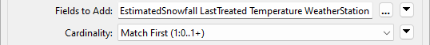
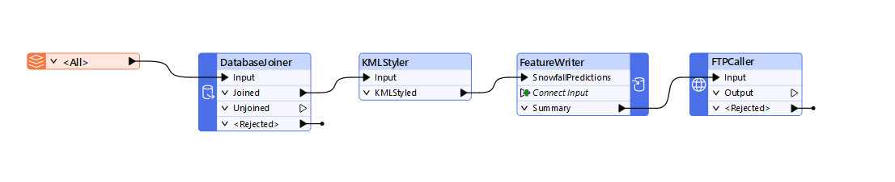
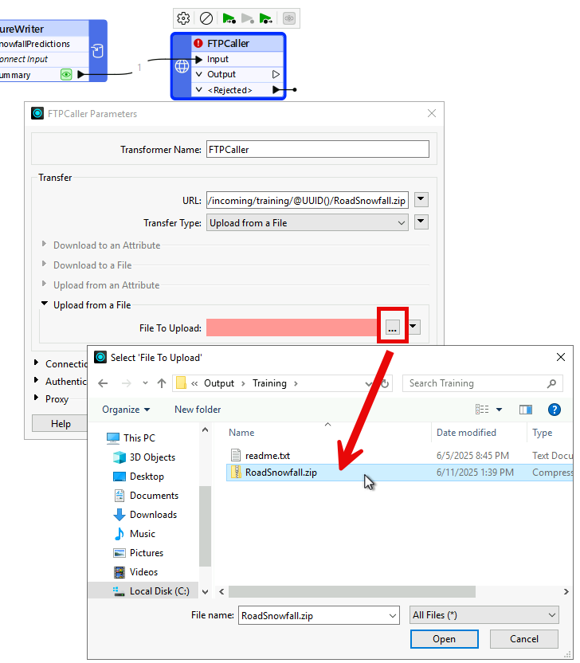

Learning Objectives
After completing this lesson, you’ll be able to:
- Carry out a data join with a web-based dataset.
- Write data to a compressed output using the FeatureWriter transformer.
- Upload data to an FTP site (or another online service) using a workspace.
Resources
Introduction
In this exercise, we're joining snowfall data to a set of road features and writing the results to an FTP site for other users to access. We'll create a workspace that joins local data to an online dataset, processes the data, and writes it to a different web destination.
1) Add Reader
Start FME Workbench (2024.1 or later), and in a blank workspace, add a reader with these parameters:
| Reader Format |
Autodesk AutoCAD DWG/DXF |
| Reader Dataset |
https://s3.amazonaws.com/FMEData/FMEData/Data/Transportation/CompleteRoads.dwg
or
C:\FMEData\Data\Transportation\CompleteRoads.dwg
|
| Parameters |
Group Entities By: Attribute Schema |
| Coord. System |
UTM84-10N |
| Workflow Options |
Single Merged Feature Type |
The Group Entities parameter is an AutoCAD-specific option. It ensures we have attributes from the AutoCAD source data exposed in Workbench.
The Merged Feature Type option treats all the road data as a single map layer, which is fine because we don't want to handle multiple layers separately.

We are just reading a file from a URL here. If you can access a cloud data storage provider such as Google Drive or Dropbox, try copying CompleteRoads.dwg to a folder on that service. Then, use the Select File From Web functionality to authenticate, connect, and read the data.
2) Locate Snowfall Dataset
In a web browser, browse to the City of Interopolis Open Data Portal (https://s3.amazonaws.com/FMEData/Interopolis/interopolis.html).
Locate the dataset for Snowfall Predictions, right-click on where it says Excel Spreadsheet, and choose to copy the URL:

The exact command will vary by the web browser.
Back in FME Workbench, add a DatabaseJoiner transformer and connect it to the roads feature type. Open the DatabaseJoiner parameters.
Set the parameters as follows:
| Reader Format |
Microsoft Excel |
| Reader Dataset |
https://s3.amazonaws.com/FMEData/Interopolis/Snowfall.xlsx |
...where you can paste the URL you copied from the web browser.
Click the Parameters button and check that the data is being read correctly. The Preview table should show records with the correct columns (StreetId, EstimatedSnowfall, etc.).
Back in the main DatabaseJoiner dialog, select Snowfall as the join table and select StreetId as both the Feature Attribute and Table Field to be joined:

If no attributes are available under the Feature Attribute field, you failed to use the Group Entities By: Attribute Schema parameter when adding the AutoCAD reader. To resolve this, the simplest method is to delete and re-add the reader, using the correct options this time.
The final parameters to set in the DatabaseJoiner are Fields to Add and Cardinality:

Select the following Fields to Add:
- EstimatedSnowfall
- LastTreated
- Temperature
- WeatherStation
Ensure Cardinality is set to Match First (1:0...1+); each road feature will be joined to the first matching database record FME finds. This option is least likely to lead to error messages in the log.
The project aims to write the data to KML format. As a training exercise, we're only interested in how and where we write the data. However, a realistic requirement would be to set the color and style of the spatial data being written (in spatial terms, we sometimes call this symbology). Try adding a KMLStyler and setting features' Color using conditional values. For example, make streets with 0 EstimatedSnowfall green, between 0 and 150 yellow, and over 150 red.
Now, it's time to write the data. Writing data directly to a web service is more complex, so we'll create a zipped, file-based dataset and then upload it to a web service.
So, add a FeatureWriter transformer and connect it to the KMLStyler transformer (if you added one) or the DatabaseJoiner transformer (if you didn't).
Open the parameters and set the writer up as follows:
| Writer Format |
OGC / Google KML |
| Writer Dataset |
C:\FMEData\Output\Training\RoadSnowfall.kml |
Then click on the dropdown arrow to the right of the Dataset parameter, and choose the option to Zip Output:

This configuration instructs the transformer to write data directly to a zipped (compressed/archived) file. You can manually type in a path, including .zip if you prefer.
As a final step in this transformer, rename the output feature type to SnowfallPredictions:

When you run the workspace, FME will write a dataset. The FeatureWriter will create an attribute called _dataset to record the dataset's name and path. The next step is to upload this file to a web service.
You can copy the data to any web service you can access; you'll need to use the appropriate connector transformer. For example, use the DropboxConnector to copy data to Dropbox or the GoogleDriveConnector to copy it to Google Drive.
5) Add FTPCaller Transformer
Alternatively, you can try using a different Connector transformer with a web service you have access to, like a GoogleDriveConnector or DropboxConnector.
Add an FTPCaller transformer and connect it to the FeatureWriter's Summary output port. The workspace should now look like this (KMLStyler optional):

Open the FTPCaller parameters. For the URL, click on the down-arrow and select Open Text Editor....
An overview of the FTPCaller parameters can be found here.
The URL is set to:
ftp://ftp.safe.com/incoming/training/@UUID()-RoadSnowfall.zip
The purpose of the @UUID() is to ensure that you are writing to a unique file each time you run the workspace. This is necessary because the FTP server does not allow overwriting.
Next, set the Transfer Type: to Upload from a file.
Under Upload from a File | File to Upload, select the RoadSnowfall.zip file from C:\FMEData\Output\Training\.

Click Open, then OK.
If you want to configure the FTPCaller to dynamically handle the File to Upload based on the value of _dataset from the FeatureWriter, click on the down arrow beside File to Upload, and select Open Text Editor. Enter the following into the Text Editor:
@ReplaceRegularExpression(@Value(_dataset),\.zip(.*),,caseSensitive=TRUE).zip.
6) Run Translation
Save the workspace and then run it.
In the log file, look for the entry for the FTPCaller.

Above we can see that the FTPCaller uploaded 0.44 MB to the FTP server, and the URL is logged.
Congratulations! You have successfully read and written data using web data connectors.